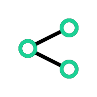

Willkommen bei Never Lose

Zeit sparen
NeverLose hilft Dir unnötige Zeit beim Suchen Deiner Schlüssel oder Deines Geldbeutels zu vermeiden. Mit der "Finden-Funktion" in der App lassen sich Gegenstände, die mit einem NeverLose versehen oder verbunden sind, ganz leicht wiederfinden.
Erinnerung
Durch ein Audiosignal können Dich Deine NeverLose an Gegenstände erinnern, falls Du dich zu weit von ihnen enfernst. So kannst Du nichts mehr vergessen oder verlieren.

Verbinden
Dein NeverLose ist kompatibel mit vielen bluethooth-fähigen Geräten. So musst Du nicht an jedem Gegenstand ein NeverLose anbringen, sondern kannst auch ein NeverLose mit diesem verbinden.